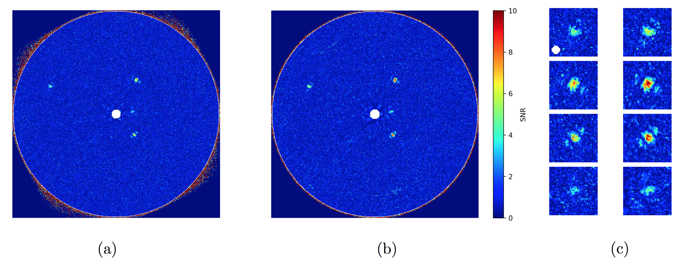

Data for Research Notes of the American Astronomical Society
Home
Research
Teaching
Publications
Please find a the python scripts to reduce and plot the data at this
link
and let me know of any bugs/comments/questions.

Fig1. - test